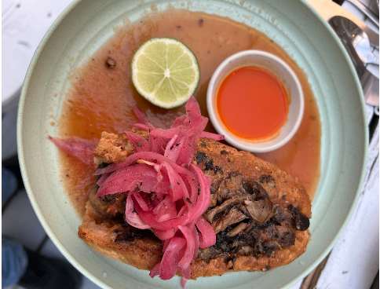
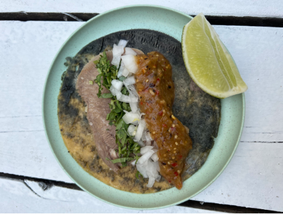
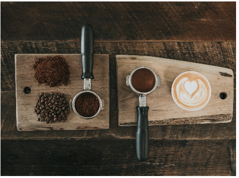

Known for being the home of the Birria, Tequila and Mariachi, Western Mexico
and Jalisco’s traditions have shaped modern Mexican cuisine.We wanted
to share our eclectic recipes with New York City, because sharing is caring, right?
We eat together
Every plate looks for a balance of sweet, spicy, salty, and sour flavors and our tables invite everyone to sit next
to each other, and share their stories, food for us is a social ritual, we are what we eat and how we eat it too
but more importantly we believe that food is something more than fuel.
TORTAS AHOGADAS
TACOS
CAFE

Perfect hangover cure, starts with
our Mexican-French birote salado
made on premises, filled with beans
and carnitas (or vegetables, your
choice) and drowned in our famous
chile de arbol sauce, make it as mild
or as spicy as you needed it today.
Designed to be eaten with one’s
bare hands because life is messy,
sometimes you are happy,
sometimes you feel low but
regardless, grab it, get in there and
get it done.

Tacos dorados (traditionally crispy ),
tacos sudados (for breakfast), tacos
de birria (with goat), tacos veganos
(vegan!), healthy and tasty as hell.
A lot of debate about what’s in a
taco or what should in one, we just
have our opinion about what’s in it
and we’ll serve them all day,
including breakfast, with traditional
Mexican breakfast tacos and
Mexican-American ones as well.

We serve coffee from Central
America the home for the world's
most beloved coffees, a region now
boasting some of the world’s most
exclusive and sought-after coffees.
I hope it rains coffee, reads a Latin
American song like an incantation
and, why not? We need it to start the
day, to enjoy a meal or simply to stop
time for a second while we enjoy a
cortado, because we can, and we
should.
Hugo Orozco spent his childhood in Guadalajara near the “Central de Abastos” helping the family business.
Chef Orozco started La Slowteria in Guadalajara being one of the first to experiment with traditional, sustainable cuisine that can be ported to our modern needs, La Slowteria took Hugo to Tulum and Carroll Gardens in Brooklyn where he stayed for years, after which he joined Vida Verde and Rossie’s as Head Chef.
come visit!
Prospect Heights Location
622 Washington Ave , Brooklyn, NY 11238
(347) 365-1618
Barclays Center Location
446A Dean St , Brooklyn, NY 11217
(347) 227-7864
Come and enjoy a small piece of Guadalajara without leaving NYC